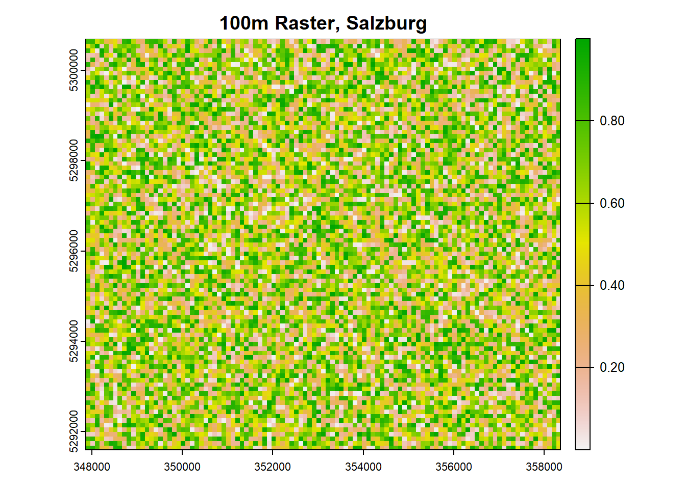

Lesson 4 Spatial Data Structures
In the realm of geoinformatics, spatial data is a cornerstone, offering a lens through which we can view, analyze, and interpret the world around us. At this point in your studies, you are already familiar with the basic spatial entities of points, lines, and polygons. These fundamental structures, while simple in concept, form the bedrock of complex spatial analyses and visualizations.
R, with its rich ecosystem of packages, offers a unique perspective on spatial data. Packages like sf, terra, stars, and spatstat have been game-changers, allowing us to handle spatial vector, raster, and multidimensional data with unprecedented ease and flexibility.
In this lesson, you will get to know the following spatial data structures in R:
- Vector data structures based on the simple feature specification implemented in the
sfpackage. - Raster data structures as provided by the
terrapackage.
You will also learn how to retrieve, assign, and modify coordinate systems, projections and transformations of spatial data structures.
4.1 Vector Data Structures
Spatial data structures are the foundation upon which geospatial information is built. They provide a systematic framework for organizing and representing geographical entities, ensuring that they can be efficiently processed, analyzed, and visualized.
In this section, we will use the sf library to work with vector data structures. The name sf (which stands for simple features) implies that sf supports simple feature access via R. Simple features is a widely supported data model that underlies data structures in many GIS applications, including QGIS and PostGIS. A major advantage of this is that using the data model ensures your work is cross-transferable to other setups, for example, importing from and exporting to spatial databases.
Simple features have spatial, geometric attributes as well as non-spatial attributes. The most common geometry types are points, lines, and polygons and their respective “multi” versions (see Simple feature geometry types).
Points are fundamental in geospatial analysis. They are the simplest spatial entities, representing a singular location in space. They have no dimensions, meaning they don’t possess length, width, or area. Using the sf package, you can create and manipulate point data with ease:
# Create a point
point <- sf::st_point(c(5, 5))
# Convert to sf object
point_sf <- sf::st_sf(geometry = sf::st_sfc(point)):: is used to indicate that the functions st_point, st_sf, and st_sfc are situated within the library sf. This helps avoiding ambiguities in the case functions from different loaded libraries have identical names.
The function st_point creates a simple feature object from a numeric vector. The object is of the same nature as the numeric vector c(5,5). To convert to an sf-object, the function st_sf is used.
Sf-objects are similar in structure as data frames. However, in contrast to data frames, sf-objects have an additional geometry column. The sf-object point_sf (created by the code above) contains a single point geometry and no fields:
## Simple feature collection with 1 feature and 0 fields
## Geometry type: POINT
## Dimension: XY
## Bounding box: xmin: 5 ymin: 5 xmax: 5 ymax: 5
## CRS: NA
## geometry
## 1 POINT (5 5)In principle sf-objects can be treated like data frames. Accordingly, data frame syntax is used to assign fields (table columns) to geometries:
To stay in GIS terms, records (rows) in a sf-object table may be called features. Features can be composed of multiple geometries:
# Create three points as multipoint geometry
point_multi <- sf::st_multipoint(matrix(c(3, 5, 7, 4, 3, 1), c(3, 2)), dim = "XY")
# Convert to sf object
point_sf_multi <- sf::st_sf(geometry = sf::st_sfc(point_multi))
plot(point_sf_multi)
Plotting the metadata of sf-object point_sf_multi in the console reveals that Geometry type is Multipoint and that no coordinate reference system has been defined (CRS: NA):
## Simple feature collection with 1 feature and 0 fields
## Geometry type: MULTIPOINT
## Dimension: XY
## Bounding box: xmin: 3 ymin: 1 xmax: 7 ymax: 4
## CRS: NA
## geometry
## 1 MULTIPOINT ((3 4), (5 3), (...To extract or set CRS information, use the st_crs function:
EPSG-Codes of other reference systems can be found here.
Now we transform the sf-object to EPSG 3416 (Austrian Lambert Projection) with the function st_transform:
# Assign Austrian Lambert Projection as CRS
point_sf_multi_transform <- sf::st_transform(point_sf_multi, 3416)Eventually we can compare the two sf-objects with different coordinate systems:
# Plotting the original and transformed points side by side
par(mfrow = c(1, 2)) # Arrange plots in 1 row, 2 columns
# Plot original points with a coordinate grid and axes
plot(sf::st_geometry(point_sf_multi), main = "Original Points (EPSG: 4326)", pch = 19, col = "blue", cex = 1.5)
grid()
box()
# Plot transformed points
plot(sf::st_geometry(point_sf_multi_transform), main = "Transformed Points (EPSG: 3416)", pch = 19, col = "red", cex = 1.5)
grid()
box()
The same syntax and functions can be used to deal with line or polygon data. The following drop-downs contain two simple examples.
Create Line Feature!
Lines are sequences of points. They’re instrumental in representing pathways, routes, or any linear feature. Here’s how you can create a line using sf:
# Create a line from a matrix of coordinates
line <- st_linestring(matrix(1:6, 3, 2))
# Convert to spatial feature
line_sf <- st_sf(geometry = st_sfc(line))
# Plot the line
plot(line_sf)
Create Polygon Feature!
Polygons are closed shapes, perfect for representing areas with defined boundaries. Here’s a demonstration using sf and its st_polygon function:
# Create a matrix of coordinates
coords <- matrix(c(2,2, 4,4, 4,2, 2,2), ncol = 2, byrow = TRUE)
# Create a list of matrices (in this case, just one matrix)
list_of_coords <- list(coords)
# Create the polygon
polygon <- st_polygon(list_of_coords)
# Convert to spatial feature
polygon_sf <- st_sf(geometry = st_sfc(polygon))
# Plot the polygon
plot(polygon_sf)
The code above successfully creates and plots a polygon. However, imagine if the last coordinate in the coordinate matrix (2,2) was mistakenly omitted.
Consider the following questions:
- What error would you expect to encounter if the last coordinate was omitted?
- Why is the last coordinate crucial for the creation of the polygon?
Solution!
- If the last coordinate was omitted, you would encounter the following error:
Error in MtrxSet(x, dim, type = "POLYGON", needClosed = TRUE) : polygons not (all) closed
A breakdown of what the error message is conveying:
MtrxSet(x, dim, type = "POLYGON", needClosed = TRUE): This is the internal function being called to set or validate the matrix representation of the polygon.type = "POLYGON": This indicates that the data structure being worked on is in fact a Polygon.needClosed = TRUE: This is a condition set within the function to ensure that polygons are closed. It checks if the starting and ending coordinates of the polygon are the same.polygons not (all) closed: This is the main error message, indicating that one or more polygons in your data are not closed, i.e., their starting and ending coordinates don’t match.
In practical terms, if you’re creating or manipulating polygons, you need to ensure that each polygon’s last coordinate is the same as its first coordinate. If not, many spatial operations, analyses, or visualizations might produce incorrect or unexpected results!
- The last coordinate is crucial because it ensures that the polygon is closed, meaning its starting and ending coordinates are the same.
4.2 Raster Data Structures
Whereas man-made infrastructures (streets, buildings, sewage systems etc.) can clearly be delineated and modeled by discrete features, our natural-physical environment (temperature, soil moisture etc.) tends to be continuous by nature and best represented by raster data structures.
Both packages sf and terra, can handle raster and vector data. Due to its comprehensive toolset and integration with the tidyverse ecosystem (tidyverse will be covered in lesson Data Manipulation), sf is predominantly used for discrete vector data structures. Until quite recently, the package raster has been the most popular resource to work with continuous data in R. This package is being replaced by terra (see here for more information).
Accordingly, in this lesson we will focus on the more modern terra package that offers several advantages over its predecessor:
- Efficiency: Terra is optimized for speed and uses less memory, making it more efficient for large datasets.
- Flexibility: It supports raster, vector, and time-series data, providing a one-stop solution for various spatial data types.
- Ease of Use: With a simplified and consistent syntax, terra is easier to pick up for newcomers.
- Comprehensive Functions: From raster algebra to resampling and reclassification, terra offers a wide array of functionalities.
- Integration: It’s designed to work seamlessly with other R packages, making it easier to integrate into larger workflows.
4.2.1 Working with SpatRaster objects
The terra SpatRaster Object can be created using the function rast:
## class : SpatRaster
## dimensions : 180, 360, 1 (nrow, ncol, nlyr)
## resolution : 1, 1 (x, y)
## extent : -180, 180, -90, 90 (xmin, xmax, ymin, ymax)
## coord. ref. : lon/lat WGS 84 (CRS84) (OGC:CRS84)By default, the SpatRaster Object is initialized with a global extent and a spatial resolution of 1 degree. The coordinate reference system is WGS84.
Alternatively, additional arguments may be provided in the function to customize the SpatRaster Object:
x <- terra::rast(ncol=100, nrow=100, xmin=797422, xmax=807387, ymin=5298037, ymax=5306341, crs = "+proj=utm +zone=32 +ellps=WGS84 +datum=WGS84 +units=m +no_defs ")
x## class : SpatRaster
## dimensions : 100, 100, 1 (nrow, ncol, nlyr)
## resolution : 99.65, 83.04 (x, y)
## extent : 797422, 807387, 5298037, 5306341 (xmin, xmax, ymin, ymax)
## coord. ref. : +proj=utm +zone=32 +datum=WGS84 +units=m +no_defsIn the example above, arguments such as the number of grid rows and columns (nrow and ncol) as well as the grid extent (xmin, xmax, ymin and ymax) were defined. The raster cell resolution is a result of these inputs (x=99.65, y=83.04).
According to the documentation of the rast function, the coordinate reference system can be specified in PROJ.4, WKT or authority:code notation. In the given example WGS84 UTM 32N is encoded in PROJ.4. To find the desired encoding, it is recommended to first search for a CRS on the Spatial Reference Website. The PROJ.4 is one out of many formats (e.g. EPSG code, WKT, GML etc.) that are provided in the search results.
The SpatRaster Object x has an extent that covers the City of Salzburg, which is completely within UTM Zone 33N. Search for the PROJ.4 encoding of WGS84 UTM 33N on the Spatial Reference Site.
Solution!
+proj=utm +zone=33 +ellps=WGS84 +datum=WGS84 +units=m +no_defs
In order to change the coordinate reference system from WGS84 UTM 32N to WGS84 UTM 33N and to change the spatial resolution to 100m, the terra-functions project and res can be used:
y <- terra::project(x, "+proj=utm +zone=33 +ellps=WGS84 +datum=WGS84 +units=m +no_defs")
terra::res(y) <- 100
y## class : SpatRaster
## dimensions : 91, 105, 1 (nrow, ncol, nlyr)
## resolution : 100, 100 (x, y)
## extent : 347863.1, 358363.1, 5291599, 5300699 (xmin, xmax, ymin, ymax)
## coord. ref. : +proj=utm +zone=33 +datum=WGS84 +units=m +no_defsNote that the number of rows and column was changed to enable a raster resolution of 100m. Also the bounding box coordinates of the SpatRaster Object have changed, which indicates a successful projection of the raster grid from UTM 32 to UTM 33.
Given that the SpatRaster Object has an undefined coordinate reference system, it can be defined by means of terra-function crs.
So far, we have created two SpatRaster Objects (identifiers x and y). They only consist of a skeleton, meaning that they have location, extend, a spatial gird resolution and a certain number of grid rows and columns. However, there are not yet cell-values associated with it:
## [1] FALSE## [1] FALSEThe function hasValues() returns a logical value FALSE, because no values were assigned to objects x and y. The code below shows how to assign values to empty SpatRaster Object y:
# assign random value between 0 and 1 to cells of SpatRaster Object y
terra::values(y) <- stats::runif(terra::ncell(y),0,1)
# get values with index 1 to index 5
terra::values(y)[1:5]## [1] 0.04989109 0.20211738 0.38767403 0.75609179 0.76878970
The function runif of package stats takes three arguments, n, min and max, to generate n random numbers in a range between min and max. In the example above argument n is derived from terra function ncell, which returns the number of cells of SpatRaster Object y as an integer value. As a result, we get a numeric vector of random values whose length corresponds to the number of grid cells of SpatRaster Object y. Accordingly, we can assign the numeric vector values to the grid.
When assigning or accessing values, it is crucial to know the origin and orientation of raster values. Create a SpatRaster Object with 4 cells and assign a numeric vector that consists of 4 values c(1,2,3,4) to it.
The syntax to select values from SpatRaster Objects is the same that we have used to select elements of matrix and array data structures:
raster-obj[<row index>, <column index>]
Where is the origin of the grid? In which order are the values c(1,2,3,4) stored in the vector grid?
Solution!
r <- terra::rast(ncol=2, nrow=2)
terra::values(r) <- c(1,2,3,4)
plot(r)
r[1,1]
r[1,1] returns value 1. Accordingly, the upper left corner is the origin of the SpatRaster Object. Values are stored left to right and top-down, i.e. r[2,2] returns value 4.
Note that the layer number lyr.1 is returned in the console, when accessing individual values of a SpatRaster Object. This implies that SpatRaster Objects can handle space-time and multivariable data. A useful example for integrating space and time in SpatRaster Objects is provided by Dominic Royé in his blog post Use of multidimensional spatial data. For more sophisticated data cube applications, the use of the stars package is recommended.
In this lesson, you learned to handle spatial vector and raster structures in R. To get to know these structures, we built vector and raster objects from scratch. In many instances, however, objects may be created in R by loading vector and raster file formats (e.g. .shp or .tif). This topic will be covered in lesson 8.